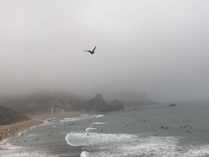
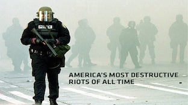
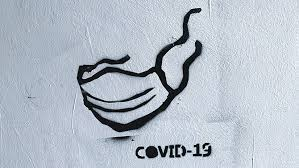

1 juin 2020
Zé de Lagos



La Géographie de l’instant
L’instant et la beauté de l’écriture: écrire à tous les jours pour dégager l’essentiel, la compréhension et la puissance d’exister.
Je suis maintenant parce qu’ici, dans l’instant. Écrire dans l’instant c’est le suspendre entre deux instants. Quand je saisi l’instant je le fait seul. L’instant c’est la seule tranche de temps qui compte.
Nous avons tous des états subjectives internes - souvenirs, pensées, émotions, etc. Une pensée est dans l’instant, son contenu peut voyager. Une action est dans l’instant présent et peut faire suite à un plan antérieur au moment. Une pensée et son instant meurent pour faire suite à une autre pensée et à un autre instant. De l’agencement de cette suite d’instants se formera la géographie de l’instant.
`«Le bloc-notes c’est l’hommage que l’observation rend aux détails. Les détails composent la toile du monde.
Sylvain Tesson»`
La Conscience est la condition qui rend possible que le monde, la vie, est importante. Conscience est elle être capable de sentir l’existence?
Nous nous plaignons de la routine, du confinement, quand un instant qui suit l’autre est une évolution du temps, mais nous ne possédons pas la sérénité pour le saisir. Le saisir demande de la passion. La passion existentiel. Si notre âme était assez large pour réaliser le détail de l’instant on éloignerais l’ennui.
4 Juin 2020
Zé de Lagos
La tentation d’écrire
« Agir c’est connaître le repos »
F. Pessoa
Nous sommes des animaux pensants. Nous vivons entre nos pensées et la réalité. Nous et le monde extérieur. La Pensée doit être confronter à la réalité.
Le monde
en ce moment
est un beau foutoir.
Il y a les affaires qui concerne la politique, le social, la géopolitique et il y a la vie individuel quotidienne. Nous travaillons pour vivre et nous “observons” et lisons sur ce qui se passe ici et ailleurs. Nous formons des opinions et pas nécessairement de la connaissance, tout en continuant à travailler pour vivre. Sommes nous capable d’utiliser une pensée critique? Avons nous perdue nos illusions? La somme de nos raisons ne font pas la raison d’un pays. Nous avons perdu le “but commun” car les institutions depuis la fin des années soixante-dix ont commencé à être sclérosées. L’économie avec comme seul but de faire du profit insoutenable a créé la situation actuelle.
L’instant politique actuel s’effondre. Nous vivons un moment historique mais pas unique. Dans le futur tout peux changer. La certitude politique n’existe pas. Individuellement nous sommes devenus individualistes et au même temps démocratiques, mais ensemble, en tant que société nous dérivons vers l’autoritarisme.
7 Juin 2020
Zé de Lagos
Actualité - suis je capable de la comprendre?
Je suis toujours surpris et admiratif de la capacité de certains observateurs et critiques de l’actualité d’avoir une opinion sur à peu près tout évènement socio-politique. Quand un expert s’exprime sur un sujet nous prenons son opinion comme une prémisse qui amène à la conclusion qui ne peut pas être autre chose que la vérité. Ce que nous entendons et ce que nous lisons ce n’est pas nécessairement la bonne explication. Une opinion ce n,est pas la vérité; une croyance ce n’est pas la vérité.
Par contre leur langage ne me rejoins pas et je doute qu’il puisse faire une différence dans la compréhension des sujets importants de notre temps. Ils sont dans un étau institutionnel les obligeant à suivre une “ligne d’institution”. La carrière est leurs gagne-pain. Un gagne-pain viens avant l’honneur, les valeurs et les convictions profondes.
Tout est devenu polarisé, binaire. Entre la droite et la gauche il n’y a rien. Aucun spectrum possible. La polarisation est oppressive et réductive. La narrative est dictatoriale. Il nous manque de comprendre les valeurs antérieurs et postérieures à cette narrative de justice sociale. Cette narrative provoque des tensions sociales car elle colporte une agenda idéologique autoritaire.
Personne possède la Vérité; dès lors qu’un groupe s’adjuge la Vérité par l’entremise d’une narrative nous devons rester vigilants. La Connaissance ce n’est pas la Vérité.
Opération par laquelle on passe d’une assertion considérée comme vraie à une autre assertion au moyen d’un système de règles qui rend cette deuxième assertion également vraie.
11 Juin 2020
Zé de Lagos